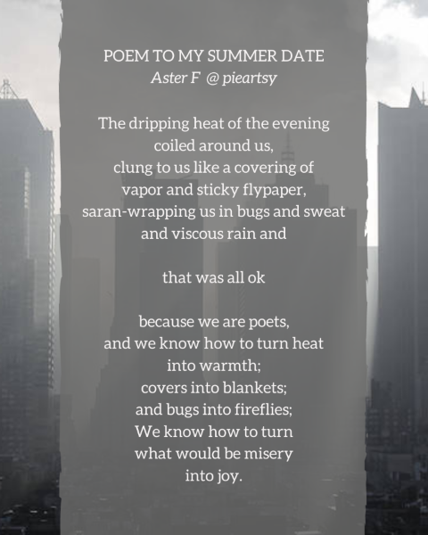
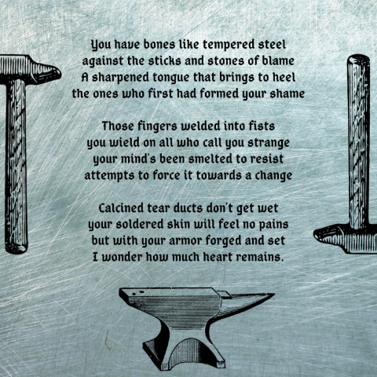
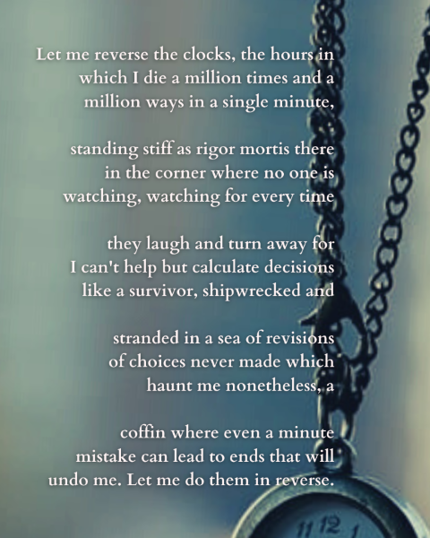

Poems
I'm a poet, and I have done several poem commissions. I'm working on an introspective chapbook. I primarily work in freeverse but I am an eternal lover of rhyme. I have been playing with various more unique structures lately.How to Fall in Love
First, stop allthe clocks in your mind
with hands that point accusingly
at all the time you're wasting
doing stupid things like
reading romances, massaged by soap bubbles
or lighting candles to melt in their scent.
Aren't there more important things,
they shriek in alarm,
than the breeze that dances through your hair,
or cherries kissing your lips?
You must
fend off the tocks and ticks
that jab and prick, stabbing
at every smile and sigh slipping out.
How can you love, when
wound and wounded so?
Second, spit out
the thick sludge spoonfed
into your lungs, roiling with
sticky poison; the dreck and dregs of
hatred; acid-burning the bronchi
until you can only cough out,
Unlovable, unlovable;
until all you exhale
is chemical smoke,
doubling over as you drown in
its toxic message.
You must
cut them off, these plastic words
that tighten round your neck like soda rings.
How can you love, when
choking on the very idea?
Third, pry off
the burs and brambles that snag you,
the dry leaves that leave you
caught in sleep, buried beneath sheets
like a cadaver.
The mud and soil that lie heavy on your limbs
lie and tell you there is nothing more
to want or make or do;
let you lie there, sinking into the frozen earth
until you forget what growing means.
You must
shake off the dirt
that grinds in your joints and reminds
you just how hard moving is.
How can you love, when
It only gathers dust?
Last,
once you have healed in silence,
once you have breathed in peace,
once you have awakened in light,
it's quite easy to fall freely
into the arms of love.
Just remember to catch yourself
when you do.
My Name
Like the flower.Like the Latin nominative, star, one I plucked
from the silent soil of night
and pressed to paper
with a scrawl.
Thin petals of light twinkle in my eye,
and seeds of smiles sprout
when the bloom of it
beams upon your lips:
"Aster."
Say it again,
let its sound powder over me;
sprinkle my ears with stardust;
I've flower-crowned myself with
the power of choosing
so every utterance is an honoring;
each inscription glitters and glows.
It grows from the discarded husk of
unchosen,
a cultivated choice
rooting in the firmament
of my being,
so let it blossom:
say it again.
Anima
I’m too much for human nature,Larger than the lives of men;
Have grown too great for love or hate
Or that which lies in mortal ken.
Tired of my earthly form,
I'll shift my frame to shape unknown;
Slough off my skin, again begin;
Become a being not my own.
My eyes will penetrate the stars;
My body, over death, shall tower;
As fire reigns within my veins,
My chest shall thrum with lightning's power.
The world will whisper of my presence,
I, who walk above the earth.
They’ll murmur low of where I go,
And of my dying and rebirth.
Poem Gallery
These are one-page poems that I prettied up with some graphic design. You can also see them and other, longer poems, on Instagram in my Poems Highlight: Instagram! The plaintext of each poem follows after the picture.

The dripping heat of the evening
coiled around us,
clung to us like a covering of
vapor and sticky flypaper,
saran-wrapping us in bugs and sweat
and viscous rain and
that was all ok
because we are poets,
and we know how to turn heat
into warmth;
covers into blankets;
and bugs into fireflies;
We know how to turn
what would be misery
into joy.


alone? I don't think I understand.
Everyone points and whispers to
the nascent horizon.
Alone, I don't think I understand
how your myriad secrets lead to
the nascent horizon,
our sanctified awakening.
How your myriad secrets lead to
pain on my behalf! I hate
our sanctified awakening,
you, standing there unflinching.
Pain on my behalf, I hate.
Everyone points and whispers to
you, standing there unflinching.
Why have you left me so?

Poem to My Summer Date
The dripping heat of the evening
coiled around us,
clung to us like a covering of
vapor and sticky flypaper,
saran-wrapping us in bugs and sweat
and viscous rain and
that was all ok
because we are poets,
and we know how to turn heat
into warmth;
covers into blankets;
and bugs into fireflies;
We know how to turn
what would be misery
into joy.
You have bones like tempered steel
Against the sticks and stones of blame
A sharpened tongue that brings to heel
The ones who first had formed your shame
Those fingers welded into fists
You wield on all who call you strange
Your mind's been smelted to resist
attempts to force it towards a change
Calcined tear ducts don't get wet
Your soldered skin will feel no pains
But with your armor forged and set
I wonder how much heart remains.
Against the sticks and stones of blame
A sharpened tongue that brings to heel
The ones who first had formed your shame
Those fingers welded into fists
You wield on all who call you strange
Your mind's been smelted to resist
attempts to force it towards a change
Calcined tear ducts don't get wet
Your soldered skin will feel no pains
But with your armor forged and set
I wonder how much heart remains.
Ikari Pantoum
Why have you left me soalone? I don't think I understand.
Everyone points and whispers to
the nascent horizon.
Alone, I don't think I understand
how your myriad secrets lead to
the nascent horizon,
our sanctified awakening.
How your myriad secrets lead to
pain on my behalf! I hate
our sanctified awakening,
you, standing there unflinching.
Pain on my behalf, I hate.
Everyone points and whispers to
you, standing there unflinching.
Why have you left me so?
Where are my presents? My roses and chocolates?
My dear, I haven't got them.
The poems of praise I could reread all day?
I only have my smile.
Why do you sit there, so silent and stolid?
I just want to be near you.
You grunt at my words, have you nothing to say?
I'm listening for a while.
Give me proof of emotion, material feeling!
Gifts could never prove it.
Talk to me dear, the way I talk to you!
Mere words could never show you.
I want to be sure that we speak the same language!
I love you but in my way.
If I hear it or touch it, I'll know that it's true.
Look closer and you'll know, too.

My dear, I haven't got them.
The poems of praise I could reread all day?
I only have my smile.
Why do you sit there, so silent and stolid?
I just want to be near you.
You grunt at my words, have you nothing to say?
I'm listening for a while.
Give me proof of emotion, material feeling!
Gifts could never prove it.
Talk to me dear, the way I talk to you!
Mere words could never show you.
I want to be sure that we speak the same language!
I love you but in my way.
If I hear it or touch it, I'll know that it's true.
Look closer and you'll know, too.
Let me reverse the clocks, the hours in
which I die a million times and a
million ways in a single minute,
standing stiff as rigor mortis there
in the corner where no one is
watching, watching for every time
they laugh and turn away for
I can't help but calculate decisions
like a survivor, shipwrecked and
stranded in a sea of revisions
of choices never made which
haunt me nonetheless, a
coffin where even a minute
mistake can lead to ends that will
undo me. Let me do them in reverse.
which I die a million times and a
million ways in a single minute,
standing stiff as rigor mortis there
in the corner where no one is
watching, watching for every time
they laugh and turn away for
I can't help but calculate decisions
like a survivor, shipwrecked and
stranded in a sea of revisions
of choices never made which
haunt me nonetheless, a
coffin where even a minute
mistake can lead to ends that will
undo me. Let me do them in reverse.